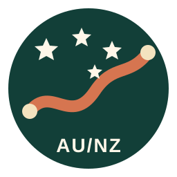
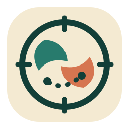

A · 最适合 favicon
南十字星路线章
路线、双端点和南十字星合成旅行徽章，辨识度最稳定，也最像一个长期可使用的旅行小组标志。
三套图标都使用深海绿、赤陶橙和暖沙色，与现有路书一致；下方同时展示 64、32、16 像素效果，便于判断 favicon 是否清晰。

路线、双端点和南十字星合成旅行徽章，辨识度最稳定，也最像一个长期可使用的旅行小组标志。

两个抽象岛形环绕罗盘，现代、简洁；适合登录页、手机主屏图标和账户头像。
把悉尼海港拱桥、海面与南岛雪山连在同一画面，故事最完整，但 16 像素下细节会略少。
我的建议：正式 Logo 与 favicon 选 A；如果更偏好现代 App 感，选 B。确定后我会补齐 favicon.ico、apple-touch-icon、PWA 图标并替换网页现有标记。